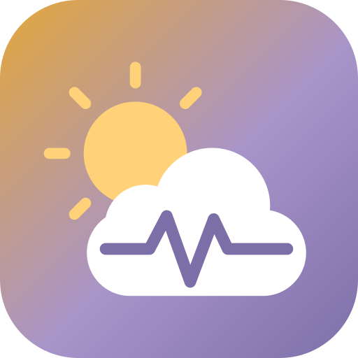
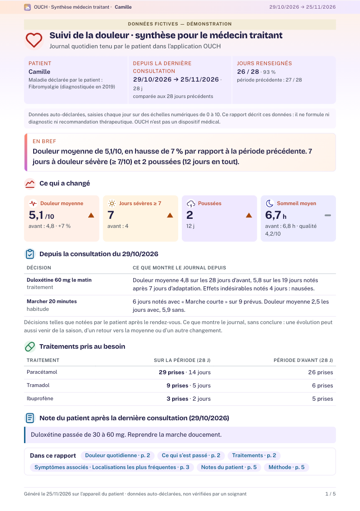
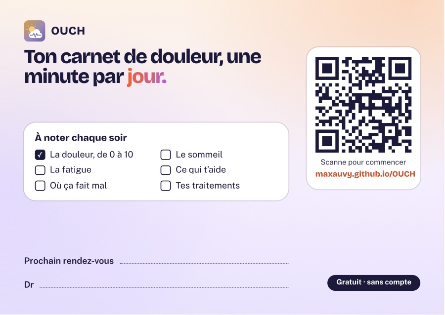

OUCHPourquoi recommander OUCH
OUCH est un carnet de douleur libre et gratuit. Le patient note sa journée en une minute ; au rendez-vous, il vous montre un rapport qui décrit ce qui s’est passé depuis la dernière fois, sans rien interpréter.
Ce qui a changé depuis le dernier rendez-vous, avec la période d’avant en regard. Plus besoin de reconstituer un mois de mémoire.
Le patient note ce que vous avez décidé ensemble. Le rapport suivant le reprend : la douleur avant et après un changement de traitement, les effets notés, une habitude tenue ou pas.
Tramadol, paracétamol, AINS : les prises notées sur la période et sur la période d’avant.
Pour une action non médicamenteuse (chaleur, marche, sieste…) : 5 jours avec et 5 sans, tirés au sort sur 10 jours. Une indication, pas une preuve.
Ce que le patient veut aborder, noté quand il y pense, pas devant la porte.

Page 1 du rapport médecin traitant, données fictives de la démo.
pour lire l’essentiel ; le détail (courbe, traitements, symptômes, zones, notes) suit sur 2 à 4 pages, à lire si besoin.

Une carte A6 à garder au cabinet. Cochez ce que le patient doit noter, écrivez la date du prochain rendez-vous, donnez-la-lui.
Son code QR ouvre OUCH sur « Ton médecin t’a conseillé ce carnet » (l’app tutoie le patient) et lui fait noter le prochain rendez-vous : le rapport est prêt pour ce jour-là.
Pour en avoir : imprimez le PDF de la carte (A6, recto verso), dans le dossier « docs/carte-medecin » du projet.
Tout est sur maxauvy.github.io/OUCH, « Vous êtes soignant ? ». Essayez la démo : « Découvrir avec un exemple », 90 jours fictifs.